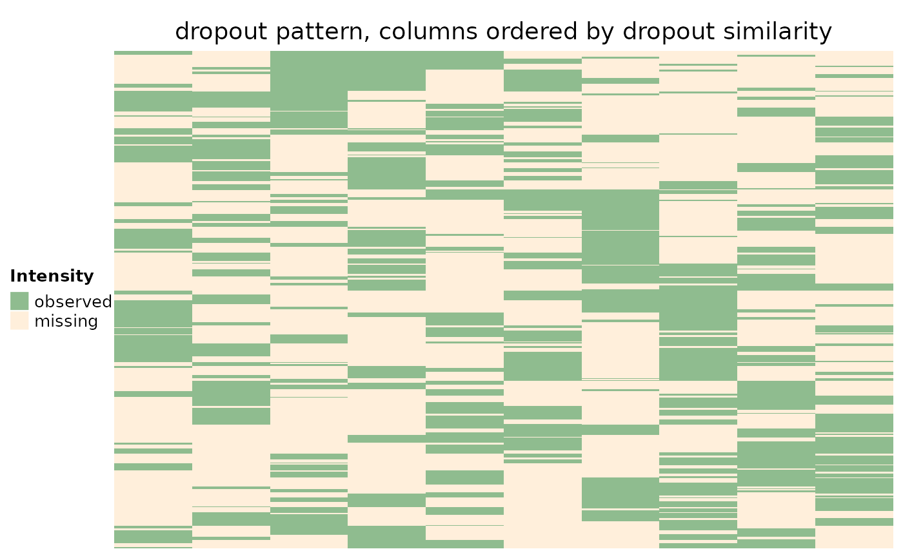

Fits a linear model to peptide dropout rate against peptide abundance. The selected features (peptides) can be
used to determine if data is Missing Not At Random (MNAR). Users should note that msImpute assumes peptides
are Missing At Random (MAR).
selectFeatures(object, n_features = 500, suppress_plot = FALSE)
Arguments
| object | Numeric matrix giving log-intensity where missing values are denoted by NA. Rows are peptides, columns are samples. |
|---|---|
| n_features | Numeric, number of features with high dropout rate. 500 by default. |
| suppress_plot | Logical show plot of dropouts vs abundances. |
Value
A data frame with a logical column denoting the selected features
References
Hediyeh-zadeh, S., Webb, A. I., & Davis, M. J. (2020). MSImpute: Imputation of label-free mass spectrometry peptides by low-rank approximation. bioRxiv.
See also
scaleData, msImpute
Examples
set.seed(101) n=12000 p=10 J=5 np=n*p missfrac=0.3 x=matrix(rnorm(n*J,mean = 5,sd = 0.2),n,J)%*%matrix(rnorm(J*p, mean = 5,sd = 0.2),J,p)+ matrix(rnorm(np,mean = 5,sd = 0.2),n,p)/5 ix=seq(np) imiss=sample(ix,np*missfrac,replace=FALSE) xna=x xna[imiss]=NA keep <- (rowSums(!is.na(xna)) >= 4) xna <- xna[keep,] rownames(xna) <- 1:nrow(xna) hdp <- selectFeatures(xna, n_features=500, suppress_plot=FALSE)# construct matrix M to capture missing entries M <- ifelse(is.na(xna),1,0) M <- M[hdp$msImpute_feature,] # plot a heatmap of missingness patterns for the selected peptides require(ComplexHeatmap)#>#>#> #> #> #> #> #> #> #> #> #> #> #> #>hm <- Heatmap(M, column_title = "dropout pattern, columns ordered by dropout similarity", name = "Intensity", col = c("#8FBC8F", "#FFEFDB"), show_row_names = FALSE, show_column_names = TRUE, cluster_rows = TRUE, cluster_columns = TRUE, show_column_dend = FALSE, show_row_dend = FALSE, row_names_gp = gpar(fontsize = 7), column_names_gp = gpar(fontsize = 8), heatmap_legend_param = list(#direction = "horizontal", heatmap_legend_side = "bottom", labels = c("observed","missing"), legend_width = unit(6, "cm")), ) hm <- draw(hm, heatmap_legend_side = "left")